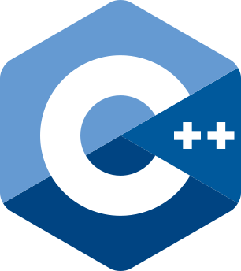
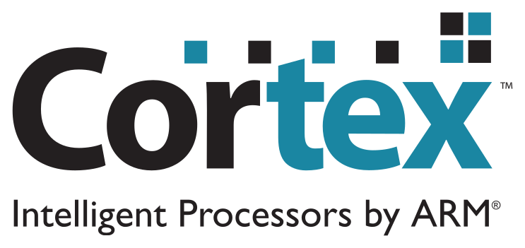
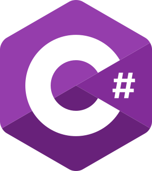

HW/SW 융합 역량
C/C++ 펌웨어 개발과 Verilog RTL 설계를 아우르며, 레지스터 레벨부터 추상화 이면의 동작 원리를 제어합니다.


ARM Cortex-M
C# winform(.NET)위성 영상 처리 시스템에서는 방대한 이미지 데이터를 제한된 시간 내에 분석하는 것이 중요하다. 특히 구름 탐지는 필수 전처리 단계이나, 기존 PS 기반 처리 방식은 속도에 한계가 있어 하드웨어 가속기 도입을 진행하게 되었다.
개인 프로젝트 (인턴십 과제, 1주)
인공지능 알고리즘 구현을 넘어, HLS를 이용해 하드웨어 아키텍처 관점에서 최적화하는 방법을 배웠다. Pipelining, Loop Unrolling이 연산 속도와 자원 사용량에 미치는 영향을 분석하며, SoC 환경에서의 HW/SW Co-design 통합 시야를 넓혔다.
무선 통신 시스템에서 보안과 신뢰성은 필수적 요소이다. 소프트웨어 기반 처리의 속도 한계를 극복하고, 하드웨어 레벨에서의 실시간 암호화 및 신호 처리를 구현하여 고속, 고신뢰성 통신 시스템을 구축하고자 이 프로젝트를 시작하게 되었다.
개인 프로젝트
이 프로젝트를 진행하면서 QPSK, BPSK 등 변조 및 복조 방법과 Costas Loop를 비롯한 통신 이론의 핵심 기술들을 실제 하드웨어로 구현할 수
있었다.
데이터를 제어하면서 CDC 매칭 등을 수행하며, 상호 IP 간 통신 시 클럭 속도 차이에 따른 버퍼링 패턴과 완충(Back-pressure)을
처리하는 실무 지식을 쌓았다.
기존 레거시 프로젝트는 단일 파일에 1600줄이 넘는 코드가 집중되어 유지보수와 기능 확장이 불가능했다. 확장성 문제를 해결하고 백엔드 변경에 대응하기 위해 C 언어와 CMake 빌드 시스템을 도입해 구조를 완전히 재설계했다.
팀 프로젝트 (Embedded:1, FrontEnd:1, BackEnd:1)
단순 기능을 넘어 '유지보수 가능한 코드'와 '확장 가능한 아키텍처'의 중요성을 통감했다. 타인의 코드를 읽고 분석하며 구조에 대한 고민을 깊이 하게 되었고, 팀의 생산성을 높이는 툴(CMake, Doxygen) 경험이 유익했다.
단체 이동 중 인원 이탈을 실시간으로 감지하고, 인솔자와 이탈자 모두에게 경고를 전달하는 LoRa 기반 이탈 감지 시스템이며, 스마트폰 앱 없이 독립적으로 동작하는 착용형 단말기를 직접 설계 및 제작한 팀 프로젝트이다.
팀 프로젝트 (Embedded: 1, Front End: 1, Back End: 1)
임베디드 시스템 문제는 FreeRTOS나 HAL과 같은 펌웨어 논리만으로 해결할 수 없음을 통감했다. 1:N 통신 환경의 충돌 제어와 MAC 프로토콜 설계, 저전력
최적화 등 하드웨어의 물리적 제약 조건을 체감했다.
Custom PCB를 직접 구성해 보며 RF 노이즈, 임피던스, 배선이 아닌 규격을 제어하는 과정을
깊게 학습할 수 있었다.